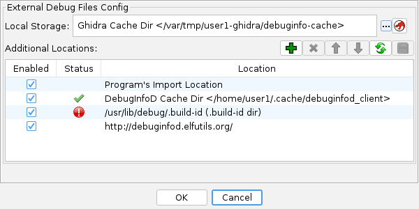

DWARF External Debug Files
These files contain DWARF debug information that has been stripped from the original binary and
placed into a separate file (typically to save space). These external files can be found using
information embedded in the original binary's ".gnu_debuglink" section (a filename and
crc32) and/or ".note.gnu.build-id" section (a hash value).
Use the ExtractELFDebugFilesScript to pull external debug files from
pre-packaged install files, typically provided by Linux / BSD distributions, for later
consumption by Ghidra.
The DWARF analyzer will use the configured external debug file locations to search for
debug files when it encounters a binary that has external debug information and is missing its
.debug_info sections.
Configuration
See Edit  DWARF External Debug Config
DWARF External Debug Config

- Local Storage - the location where files downloaded
from remote debuginfod servers will be stored. This defaults to a Ghidra specific cache
directory, but can be changed to debuginfod's cache directory, or any other location.
- Additional Locations - a list of locations to search when trying to find
a debug file.
Button actions:
 (Add) Adds a location. See Debug location types
(Add) Adds a location. See Debug location types (Delete) Deletes the highlighted row
(Delete) Deletes the highlighted row
 (Up/Down) Moves the highlighted row up or down
(Up/Down) Moves the highlighted row up or down (Refresh) Updates the status of all rows
(Refresh) Updates the status of all rows (Save) Saves the current information
(Save) Saves the current information
Debug location types:
- Program's Import Location - searchs the directory from which the program was
imported for any debug-link specified files, and for build-id specified files named
aabbcc...zz.debug, where aa..zz is the build-id hash in hex.
- Build-id Directory - directory where debug files that are identified by a
build-id hash are stored.
Debug files are named aa/bbccdd...zz.debug under the base directory
This storage scheme for build-id debug files is distinct from debuginfod's scheme.
Example: /usr/lib/debug/.build-id
- Debug Link Directory - directory where debug files that are identified by a
debug filename and crc hash (found in the binary's .gnu_debuglink section).
NOTE: This directory is searched recursively for a matching file.
- Debuginfod Directory - directory where debuginfod has stored files. This
typically will be something like
/home/user/.cache/debuginfod_client.
- Debuginfod URL - HTTP(s) URL that points to a debuginfod server.
- Import DEBUGINFOD_URLS Env Var - Helper action that adds any HTTP(s) URLs found
in debuginfod's environment variable.
Provided by: DWARF External Debug Files Plugin